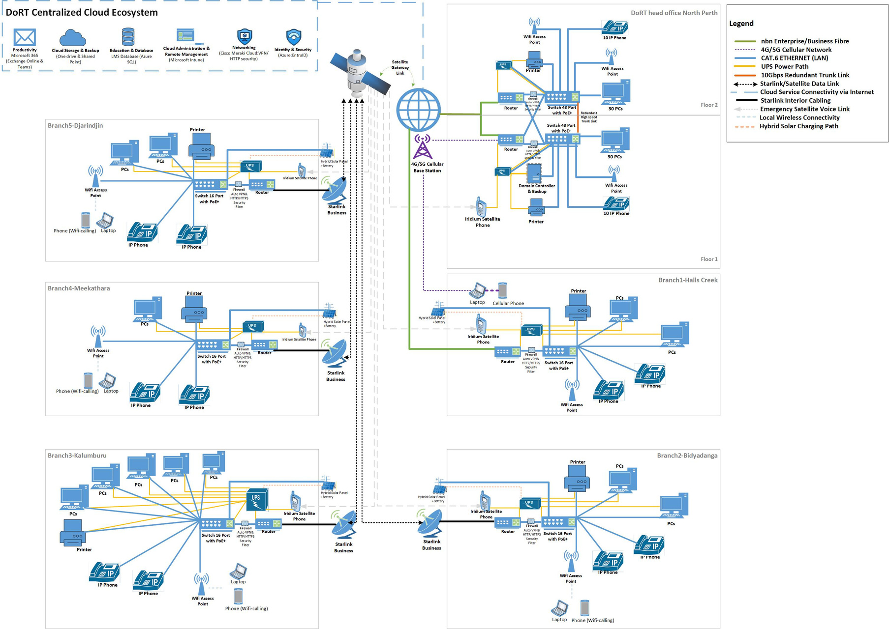
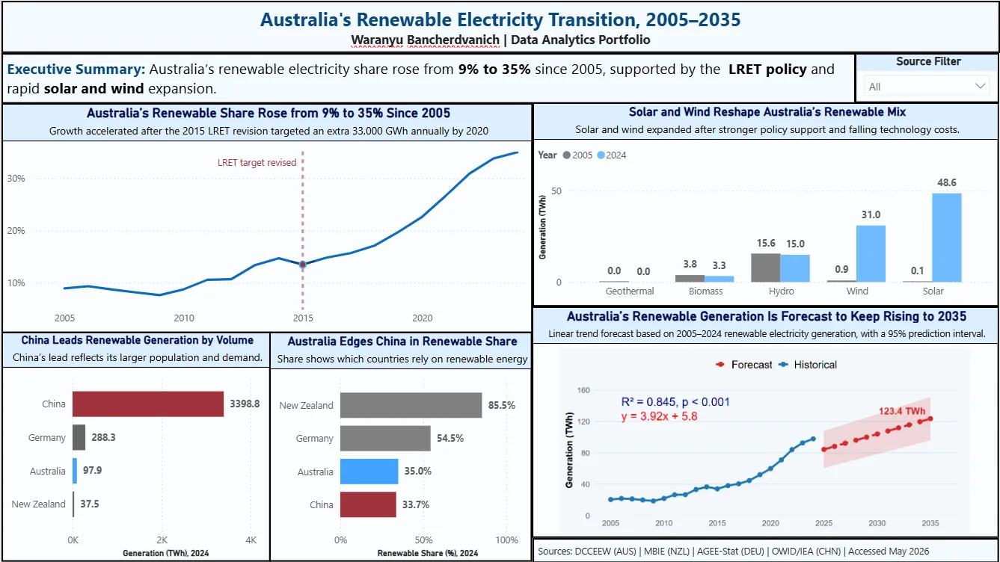

06 / IT infrastructure · Pair project
Connecting five remote training centres to a Perth head office
An IT infrastructure and capital plan for a government department: replace end-of-life PCs at five remote Indigenous community resource centres, link them to a 60-staff head office, and design it so calls and learning keep working when the connection or the power fails.
office and 5 remote centres
for the remote sites
664.9 ms on Sky Muster
- Assess 12 old PCs
- Compare 5 WAN options
- Design the network
- Cost every item in Excel
- Plan security and power

The problem
The Department of Remote Training (DoRT), a fictional WA government department in the case study, runs a 60-staff head office in Perth and five resource centres in remote Indigenous communities: Halls Creek, Bidyadanga, Kalumburu, Meekatharra and Djarindjin. The centres were running on 12 end-of-life PCs, from Windows XP to 8.1, which we assessed against 8 service requirements.
- Unstable connections between the remote sites and Perth, so staff could not rely on the learning system.
- Frequent power cuts, with no solar or battery backup at the remote sites.
- Costly, dated phone calls, with no VoIP or Teams calling between sites.
- Disconnected systems and security gaps, with no VPN, no cloud backup and no central way to manage devices.
The brief: a secure, resilient network that gives every site the same access to the head office’s systems, within a A$2.1M budget.
Choosing a connection for each site
Remote WA has no single right answer, so we compared five WAN options on reliability, latency, availability and cost, using published supplier prices.
| Option | Cost | Strength | Weakness | Used for |
|---|---|---|---|---|
| NBN Enterprise Ethernet | A$449 a month | Dedicated fibre, best reliability | Highest cost, depends on the premises | Head office |
| NBN Business FTTP | A$110 a month | Stable and cost-effective | Depends on the premises | Halls Creek |
| 5G Business | From A$70 a month | Fast to set up, flexible | Depends on coverage and congestion | Head office backup |
| Starlink Business | A$486 a month, A$3,684 per kit | Low latency, about 29.8 ms | Needs stable power, sensitive to extreme weather | Four remote centres |
| NBN Sky Muster | A$59.95 to A$109.95 a month | Cheapest, no upfront hardware | Very high latency, about 664.9 ms, and data caps | Not chosen |
Why Starlink over Sky Muster. Sky Muster is much cheaper, but at about 664.9 ms of latency a Teams or VoIP call lags badly. Starlink runs at about 29.8 ms, so staff at Bidyadanga, Kalumburu, Meekatharra and Djarindjin can call head office as if they were next door. Halls Creek has NBN fibre available, so it gets the cheaper fixed line instead.
The network design
- Head office: an extended star across two floors, with two 48-port PoE switches joined by a 10 Gbps redundant trunk link, two routers with firewalls, 60 Windows 11 PCs, 20 VoIP phones, three wireless access points, a domain controller with backup, and two UPS units.
- Each remote centre: a star with one 16-port PoE switch, a router with firewall, one to five PCs (12 in all), VoIP phones, a wireless access point, a UPS and a hybrid solar system with battery, so a power cut does not take the site offline.
- Backup calling: an Iridium satellite phone at every site for when both the internet and the power fail.
What we found
-
01
Latency decided the remote links, not price. Sky Muster is the cheapest option, but at about 664.9 ms a Teams or VoIP call lags badly. Starlink at about 29.8 ms costs more and gives the four most remote centres calls that work.
-
02
One connection does not fit every site. The head office gets dedicated NBN Enterprise Ethernet with a 5G backup, Halls Creek can reach NBN fibre so it gets the cheaper fixed line, and only the four sites with no fixed option go to Starlink.
-
03
Power is the weak point, not the network. Starlink needs stable power and the remote sites lose it often, so every centre gets hybrid solar with a battery and a UPS. Without that, the rest of the design cannot stay online.
-
04
Calls keep working even when the internet does not. Teams Phone makes calls between all six sites free, and an Iridium satellite phone at every site covers the times when both the internet and the power are down.
-
05
It fits comfortably in the budget. Year 1 uses about a third of the A$2.1M, leaving the rest for maintenance and future upgrades.
What we recommended
These are recommendations for the department, not systems we set up or ran ourselves.
- Cloud and devices: Microsoft 365 and Teams Phone for email, files and calls between all six sites, Azure with Entra ID for the learning system’s data and staff logins, and Intune to manage and update every PC remotely.
- Security: firewalls at every site, an encrypted site-to-site VPN back to head office, separate staff and guest wifi, multi-factor authentication, role-based access and automatic patching.
- Green IT: certified e-waste recycling for the old PCs, energy-efficient hardware with after-hours sleep schedules, less printing, and remote support instead of travel.
What the plan can’t tell you
- The department is fictional, so the plan was never tested against a real site survey.
- Prices are published list prices, not quotes. Freight and installation in remote communities could add to them.
- The solar systems are costed per site, not engineered for each centre’s actual load.
- The Microsoft cloud tools are recommendations. We did not configure or test them hands-on.
What we did
Jatuporn Thongmo and I designed every part of the plan together:
- Assessed the 12 old PCs against the department’s 8 service requirements.
- Compared the five WAN options and chose a connection for each site.
- Designed the head office and remote-site networks, with the hardware for each.
- Built the Excel cost model, pricing every item from cited suppliers and splitting it into capital and running costs.
- Drew the network diagram in Visio.
Links
